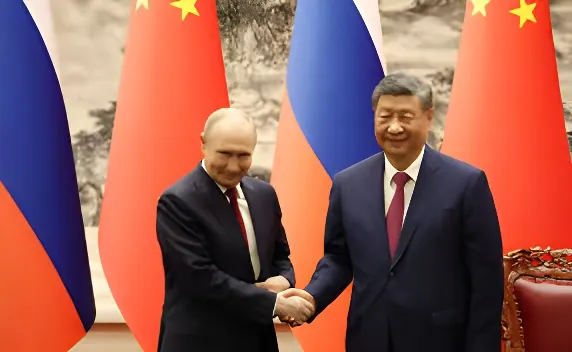

Les 19 et 20 mai 2026, Vladimir Poutine effectue sa 25e visite officielle en Chine, quatre jours à peine après le départ de Donald Trump. Les deux dirigeants signent une quarantaine d'accords — dont un traité de coopération stratégique aux clauses militaires — et affichent une relation qu'ils qualifient eux-mêmes d'« inébranlable ». Derrière ce calendrier serré, Pékin révèle l'étendue de sa manœuvre : entretenir à la fois la décrispation avec Washington et un axe structurant avec Moscou, tout en s'imposant comme le pôle central de la recomposition de l'ordre mondial.
Trump quitte Pékin le 16 mai 2026 après deux jours de sommet avec Xi Jinping, revendiquant des accords commerciaux « fantastiques » — dont une commande confirmée de 200 Boeing et des promesses d'achats de produits agricoles et d'énergie américains. Poutine arrive à son tour à Pékin le 19 mai, accompagné d'une délégation fournie : cinq vice-Premiers ministres, huit ministres, la gouverneure de la banque centrale russe et les dirigeants des grandes compagnies énergétiques publiques.
Le Kremlin nie tout lien entre les deux visites, invoquant le 25e anniversaire du Traité de bon voisinage, d'amitié et de coopération sino-russe signé le 16 juillet 2001 comme motif officiel du déplacement. Mais l'enchaînement des agendas — Trump puis Poutine, tous deux reçus au Palais du Peuple à quelques jours d'intervalle — ne manque pas de faire réagir les chancelleries européennes. Le chancelier allemand Friedrich Merz exprime l'espoir que Xi ait incité Poutine à mettre fin à la guerre en Ukraine. En vain : le conflit n'est pas évoqué publiquement lors du sommet.
Le cœur du sommet est la signature d'un document de 47 pages visant à renforcer le partenariat global et la coopération stratégique entre les deux pays. Ce texte inclut des clauses militaires explicites — un traité de coopération stratégique dont la portée dépasse les précédentes déclarations — et une déclaration commune en faveur d'un ordre mondial multipolaire. Les deux dirigeants y dénoncent les courants « hégémoniques » sur la scène internationale, sans citer les États-Unis directement.
Dans le domaine énergétique, le porte-parole du Kremlin évoque un « assez grand progrès » sur le dossier du gazoduc « Force de Sibérie 2 », sans accord définitif. Le projet, d'une longueur de 2 600 kilomètres, relierait les réserves sibériennes à la Chine via la Mongolie, avec une capacité annuelle projetée de 50 milliards de mètres cubes. Pour Moscou, il constitue un débouché vital pour ses hydrocarbures depuis que l'Europe a progressivement réduit ses importations après l'invasion de l'Ukraine en 2022. Côté chinois, la prudence persiste : Pékin entend diversifier ses approvisionnements et ne veut pas devenir dépendant d'une seule source.
Trump à Pékin pour deux jours de sommet avec Xi Jinping. Commande annoncée de 200 Boeing, promesses d'achats agricoles et énergétiques. Xi salue « une visite historique ». Trump déclare n'avoir pas discuté de droits de douane.
Trump quitte Pékin. Le Kremlin annonce la visite de Poutine en Chine pour les 19 et 20 mai, officiellement à l'invitation de Xi Jinping dans le cadre du 25e anniversaire du traité d'amitié sino-russe.
Poutine arrive à Pékin accompagné d'une délégation de ministres et de dirigeants d'entreprises énergétiques. La quasi-totalité des échanges commerciaux russo-chinois s'effectue désormais en roubles et en yuans, selon l'agence russe Tass.
Sommet au Palais du Peuple. Xi et Poutine signent environ 40 accords, dont un traité de coopération stratégique aux clauses militaires. Poutine qualifie les relations de « niveau sans précédent ». Xi les dit « inébranlables ». Le conflit ukrainien n'est pas évoqué publiquement.
La Chine officialise la commande de 200 avions Boeing annoncée par Trump quelques jours plus tôt, confirmant le parallélisme des deux axes diplomatiques maintenus simultanément par Pékin.
Depuis l'invasion russe de l'Ukraine en février 2022, la Chine fournit à la Russie un appui économique, diplomatique et — selon les accusations occidentales — indirect sur le plan militaire. Les échanges bilatéraux ont considérablement augmenté, roubles et yuans ayant progressivement remplacé le dollar dans les transactions. Pékin maintient officiellement une position de « neutralité », appelant au dialogue et aux négociations, tout en refusant de condamner l'offensive russe.
La visite de mai 2026 s'inscrit dans cette continuité. Les deux dirigeants prolongent le Traité de bon voisinage et de coopération jusqu'à la prochaine décennie. Dans la déclaration commune publiée par le Kremlin, Russie et Chine se disent « convaincues de la nécessité d'éliminer les causes profondes de la crise ukrainienne » et préconisent de « continuer à rechercher une solution par la voie du dialogue et des négociations » — formulation qui, en pratique, couvre l'absence de pression sur Moscou.
« Le niveau des relations sino-russes est sans précédent, malgré les facteurs extérieurs défavorables. »
— Vladimir Poutine, sommet de Pékin, 20 mai 2026« Nos relations sont inébranlables. La Chine et la Russie s'opposeront ensemble aux courants hégémoniques sur la scène internationale. »
— Xi Jinping, sommet de Pékin, 20 mai 2026Le vrai bénéficiaire politique de cette séquence est Xi Jinping lui-même. En recevant Trump puis Poutine en moins d'une semaine, Pékin confirme son statut de puissance incontournable, seul interlocuteur capable de dialoguer simultanément avec les deux blocs antagonistes qui structurent le désordre mondial de 2026. Trump avait quitté Pékin avec peu d'annonces concrètes malgré la mise en scène — le montant des Boeing est nettement inférieur aux 500 appareils initialement évoqués, et la Chine n'a pas confirmé publiquement les accords agricoles.
Poutine, lui, repart avec davantage de substance formalisée : une quarantaine de textes signés, un traité stratégique aux clauses militaires, et l'exemption de visa prolongée pour les ressortissants russes jusqu'au 31 décembre 2027. Sur le gazoduc, le « grand progrès » annoncé par le Kremlin masque l'absence d'accord définitif : la Chine continue de négocier âprement les conditions tarifaires, refusant d'offrir à Moscou une dépendance symétrique à celle que l'Europe a progressivement abandonnée.
| Acteur | Résultats obtenus | Limites |
|---|---|---|
| Russie | ~40 accords signés, traité militaire, visa prolongé | Pas d'accord définitif sur Force de Sibérie 2 |
| Chine | Statut de pivot diplomatique mondial affirmé | Équilibre fragile entre Washington et Moscou |
| États-Unis | Commande Boeing confirmée, tonalité positive | Aucune percée sur Ukraine ni Moyen-Orient |
| Europe / Ukraine | — | Marginalisées des deux sommets de Pékin |
Pour les capitales européennes, cette séquence illustre une marginalisation croissante. Washington et Pékin négocient directement, Moscou et Pékin consolident leur axe — et l'Europe observe. La prolongation des achats européens de GNL russe au premier trimestre 2026, alors que Bruxelles promet d'y mettre fin d'ici l'automne 2027, révèle une incohérence que Kyiv ne manque pas de souligner. Friedrich Merz avait espéré que Xi pèse sur Poutine pour mettre fin à la guerre en Ukraine : le silence public du sommet sur ce sujet constitue en soi une réponse.
Poutine a par ailleurs confirmé sa participation au sommet de l'APEC prévu à Shenzhen en novembre 2026 — une enceinte multilatérale où Donald Trump est également attendu. Pékin ménage ainsi, pour les mois à venir, un nouveau point de contact possible entre les deux dirigeants rivaux, dont elle resterait l'hôte et l'arbitre.
La séquence Trump–Poutine à Pékin en mai 2026 n'est pas le signe d'une Chine tiraillée entre deux loyautés : c'est la démonstration maîtrisée d'une puissance qui a fait de l'ambiguïté stratégique un instrument de pouvoir. En accueillant successivement les deux dirigeants qui incarnent les fractures du monde contemporain, Xi Jinping impose Pékin comme centre de gravité d'un ordre international qu'il n'a pas conçu mais qu'il entend désormais remodeler. L'axe sino-russe sort renforcé dans ses fondamentaux — énergie, défense, multilatéralisme alternatif — tandis que Washington rentre avec des Boeing et des promesses. L'Europe, elle, n'était même pas invitée.